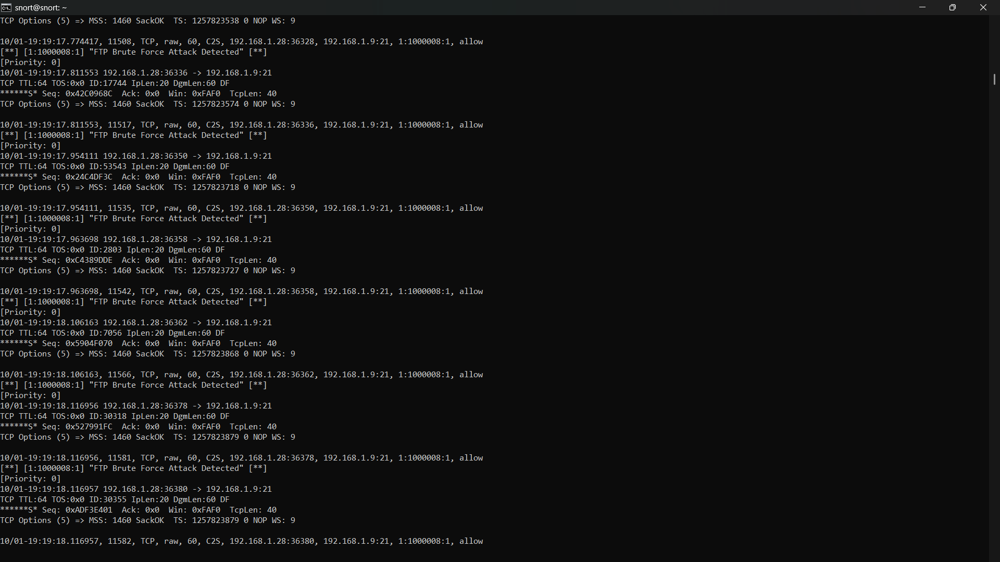
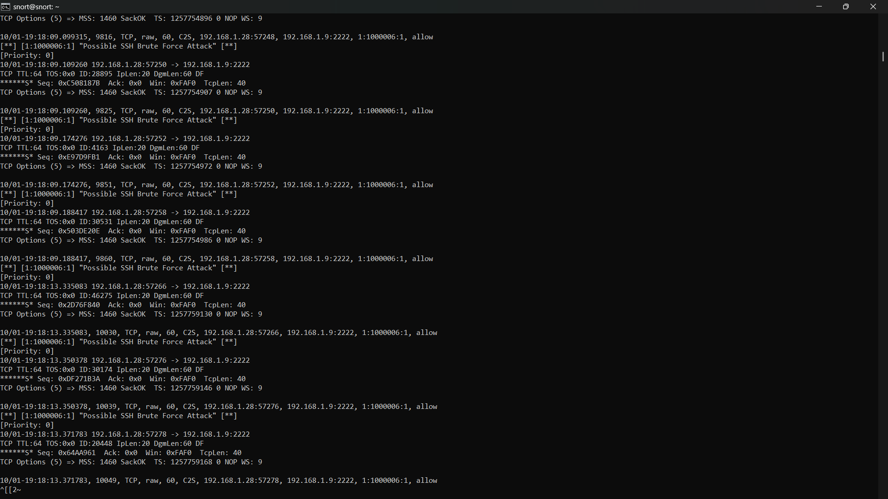

01Project overview
I configured Snort 3 as an intrusion detection system on Linux, wrote custom detection rules for suspicious SSH and FTP authentication activity, generated controlled brute-force traffic with Hydra, and validated that the rules produced alerts and security log entries.
SSH was configured on a non-default port. The workflow covers intrusion detection, traffic analysis, event logging and investigation.
02Problem statement
SSH and FTP are common targets for credential guessing. A SOC analyst needs detections that turn a flood of failed authentication attempts into an alert that can be triaged. Out-of-the-box rule sets do not always match a specific environment (for example a service on a non-default port), so custom rules and proof that they fire are needed.
03Objective
Configure network monitoring and custom rules to identify suspicious authentication activity targeting SSH and FTP, and validate that the detections work.
04Technologies and tools
| Tool | Use |
|---|---|
| Snort 3 | Network IDS engine inspecting raw traffic and matching rules |
| Custom rules | Detection of SSH and FTP authentication abuse (SIDs 1000006 & 1000008) |
| Hydra | Generating controlled brute-force traffic in an isolated lab environment |
| Linux | Host platform for sensor, services, and analysis |
| SSH (port 2222) | Monitored service configured on a non-default port |
| FTP (port 21) | Monitored file transfer service |
05System architecture
The network diagram below illustrates the test environment setup where traffic from the attacking host passes through the Snort 3 network inspection sensor to reach target services.
06Implementation methodology
- Set up Snort 3 on Linux and configure listening network interfaces to inspect incoming local network traffic.
- Deploy test services: configure SSH on a custom non-default port (port 2222) and standard FTP (port 21) on the target host (192.168.1.9).
- Write custom detection rules specifying protocols, port definitions, flow direction, and thresholds for high-frequency connection attempts.
- Configure alert outputs and logging to capture fast-pattern alert lines and raw TCP/IP header details.
- Simulate controlled dictionary attacks using Hydra from the attack test host (192.168.1.28).
- Validate rule triggers and examine alert logs to verify accurate source IP, destination port, timestamp, and signature matching.
07Detection / testing workflow
- Generate: Hydra launches rapid authentication attempts against FTP (port 21) and SSH (port 2222) on target host 192.168.1.9.
- Inspect: Snort 3 decodes TCP segments, tracks session handshakes, and compares traffic patterns against custom rule criteria.
- Alert: When attack thresholds are met, Snort emits real-time alert records containing SID, revision number, rule description, source/destination IP, and port bindings.
- Investigate: The analyst inspects terminal alert output, correlates TCP sequence numbers and flags, and verifies that no benign traffic is inappropriately classified.
08Results and validation
The custom Snort 3 detection rules were validated in live terminal runs against controlled Hydra simulations:
- FTP Brute-Force Alert Validation: Custom rule SID
1000008:1triggered immediately upon detecting rapid authentication bursts, generating log alerts:[**] [1:1000008:1] "FTP Brute Force Attack Detected" [**]for connections between192.168.1.28and192.168.1.9:21. - SSH Brute-Force Alert Validation (Non-Standard Port): Custom rule SID
1000006:1fired consistently for connections targeting non-default port 2222, generating alerts:[**] [1:1000006:1] "Possible SSH Brute Force Attack" [**]for traffic from192.168.1.28to192.168.1.9:2222. - Fidelity: Both rules successfully isolated rapid brute-force connection streams while preserving full TCP header data (IP ID, window size, TCP options) for subsequent forensic triage.
09Challenges and learning
- Port Independence in Detection: Real-world adversaries frequently scan and attack services moved to non-standard ports (such as SSH on port 2222). Rules must be engineered to detect protocol anomalies or specified port ranges rather than assuming default ports.
- Threshold Tuning: Balancing alert sensitivity to detect automated credential stuffing while preventing false positives from intermittent legitimate login failures.
- Correlating Log Telemetry: Connecting Snort alerts directly to packet attributes and authentication failure patterns constitutes the core workflow of effective SOC alert triage.
10Screenshots and evidence
The following terminal captures verify live alert generation from custom Snort 3 rules during simulated brute-force testing.

Terminal output on snort@snort:~ demonstrating custom Snort 3 rule (SID 1000008, rev 1) firing in real time: "FTP Brute Force Attack Detected". Logs capture repeated TCP connection bursts from attacking host 192.168.1.28 to FTP server 192.168.1.9 on port 21.

Real-time alert output validating detection of an automated Hydra SSH brute-force attack: "Possible SSH Brute Force Attack" (SID 1000006, rev 1). Validates rule inspection against non-standard service port 2222 (traffic: 192.168.1.28 -> 192.168.1.9:2222).
All network traffic, simulated attacks, and packet captures were conducted in an isolated private test network (192.168.1.0/24). No production systems or unauthorized hosts were targeted.